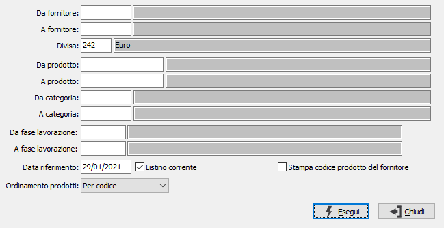

Stampa listini terzisti

DA FORNITORE: codice del fornitore, presente in anagrafica, da cui si vuole iniziare la selezione di stampa. Confermando a vuoto, la selezione inizia dal primo fornitore valido. Sul campo sono attive le funzioni di ricerca (F9).
A FORNITORE: codice del fornitore, presente in anagrafica, con cui si vuole terminare la selezione di stampa. Confermando a vuoto, la selezione termina con l'ultimo fornitore valido. Sul campo sono attive le funzioni di ricerca (F9).
DIVISA: codice della divisa per cui si vuole effettuare la stampa. Sul campo sono attive le funzioni di ricerca (F9).
DA PRODOTTO: codice del prodotto da cui si intende iniziare la selezione di stampa; confermando a vuoto la selezione inizia dal primo codice valido. Sul campo sono attive le funzioni di ricerca (F9).
A PRODOTTO: codice del prodotto con cui si intende concludere la selezione di stampa; confermando a vuoto la selezione termina con l’ultimo codice valido. Sul campo sono attive le funzioni di ricerca (F9).
DA CATEGORIA: codice della categoria merceologica da cui si intende iniziare la selezione di stampa; confermando a vuoto la selezione inizia dal primo codice valido. Sul campo sono attive le funzioni di ricerca (F9).
A CATEGORIA: codice della categoria merceologica con cui si intende concludere la selezione di stampa; confermando a vuoto la selezione termina con l’ultimo codice valido. Sul campo sono attive le funzioni di ricerca (F9).
DA FASE DI LAVORAZIONE: codice della fase di lavorazione da cui si intende iniziare la selezione di stampa; confermando a vuoto la selezione inizia dal primo codice valido. Sul campo sono attive le funzioni di ricerca (F9).
A FASE DI LAVORAZIONE: codice della fase di lavorazione con cui si intende concludere la selezione di stampa; confermando a vuoto la selezione termina con l’ultimo codice valido. Sul campo sono attive le funzioni di ricerca (F9).
DATA RIFERIMENTO: definisce la data, tramite cui ricercare i prezzi per il fornitore e la divisa inseriti in precedenza. Saranno stampati solo i prodotti le cui date di validità comprendono, come periodo, la data di riferimento.
LISTINO CORRENTE: indica se stampare il listino corrente, quello valido alla data di sistema (casella con segno di spunta). Se la casella non viene spuntata vengono stampati tutti i dati presenti che rientrano nei limiti precedenti.
ORDINAMENTO PRODOTTI: definisce il metodo di ordinamento dei prodotti in stampa: per codice, per descrizione.
STAMPA CODICE PRODOTTO DEL FORNITORE: definisce se stampare, come codice prodotto, il codice prodotto del fornitore (casella con segno di spunta).